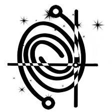

CosmicVarta is a platform for promoting Indian astronomy research in a non-technical way. We encourage Indian astronomers to write about their research in a way that is engaging as well as understandable to a wide audience. We help edit those writings and then publish it on our website. We also have resources on how to pursue a career in astronomy.
I am currently a scientific editor of CosmicVarta. I have authored as well as edited articles on this platform. Currently, I oversee the editing process.
Articles Authored:
-
Star-forming S0 Galaxies in SDSS-MaNGA: fading spirals or rejuvenated S0s? Authored by Himansh Rathore and Kavin Kumar. The article can be found here.
Articles Edited:
-
Solar cycle 25 is going to be a bit stronger than cycle 24! Authored by Pawan Kumar. The article can be found here.
-
Nuclear Pasta in the crust of neutron star; Authored by Vishal Parmar. The article can be found here.
-
The ghost of a star screams 6 days after its death; Authored by Harsh Kumar. The article can be found here.
-
Collisions between galaxies: A frequent phenomenon than we expected earlier; Authored by Gourab Giri. The article can be found here.